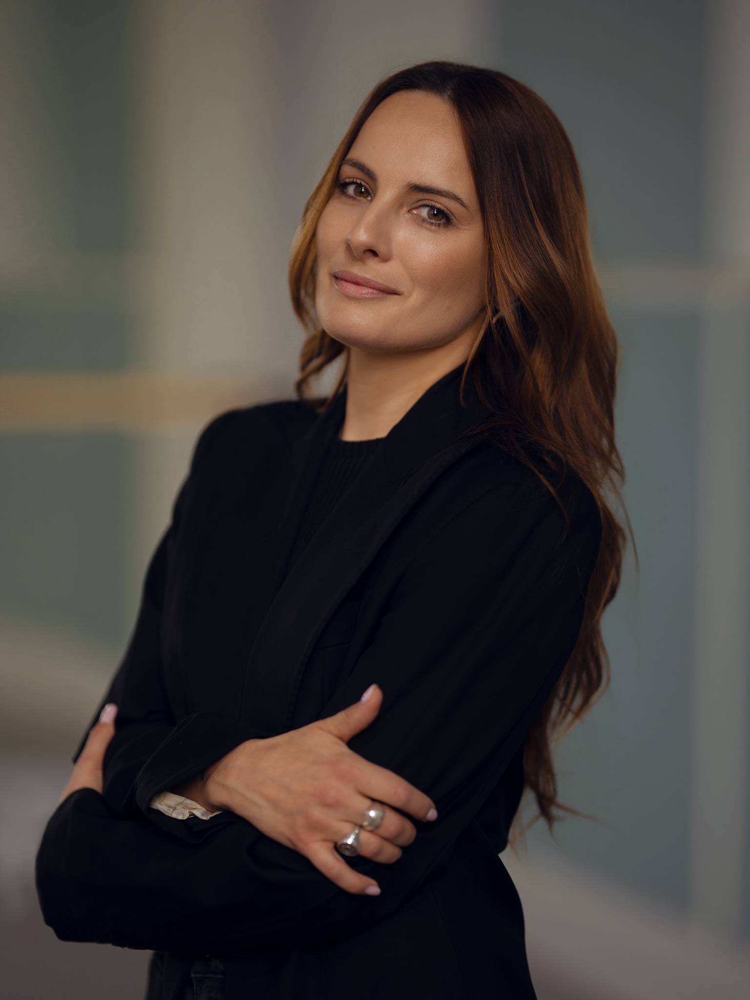

Zespół realizacyjny

Choreografia
P.o. kierownika Baletu Opery Bałtyckiej
Tancerka, choreografka, pedagog. Absolwentka Ogólnokształcącej Szkoły Baletowej w Gdańsku oraz Wydziału Pedagogiki Tańca i Baletu Akademii Muzycznej im. Fryderyka Chopina w Warszawie. W latach 2002–2007 solistka Royal Danish Ballet w Kopenhadze, gdzie kreowała główne role w choreografiach Augusta Bournonville'a, George'a Balanchine'a, Johna Neumeiera, Williama Forsythe'a i Jiříego Kyliána.
Od września 2016 roku pełni obowiązki kierownika Baletu Opery Bałtyckiej. Choreografka i dyrektor artystyczna Sopockiego Teatru Muzycznego Baabus Musicalis. W Operze Bałtyckiej współtworzyła m.in. choreografie do „Don Kichota" i „Giselle". „Fantazja i Fortuna" to jej pierwsza tak rozbudowana autorska forma — wieczór baletowy łączący „Symfonię fantastyczną" Berlioza i „Carmina Burana" Orffa.
Kierownictwo muzyczne
Dyrygent
Ukraiński dyrygent związany z Operą Bałtycką w Gdańsku. Prowadzi orkiestrę przez dwie skrajnie różne partytury wieczoru: romantyczną, programową „Symfonię fantastyczną" Berlioza — gdzie każdy obraz wymaga zmiany barwy, tempa i charakteru — oraz monumentalną „Carmina Burana" Orffa, w której orkiestra musi wytrzymać dwa pełne chóry, chór dziecięcy i trzech solistów.
Kostiumy
Projektantka mody
Polska projektantka mody znana z awangardowych, mrocznych form i pracy z artystami sceny popowej i rockowej — m.in. Madonny i Marilyna Mansona. „Fantazja i Fortuna" to jej teatralny debiut. Kostiumy obu części spektaklu — korony, rogi, maski o gotyckiej i surrealistycznej proweniencji — są dla niej kontynuacją mody scenicznej, a nie tradycyjnego kostiumu baletowego.
Szukam emocji, nie tylko formy. Nie boję się mroku — czasem właśnie on najwięcej mówi o człowieku.
— Katarzyna KonieczkaScenografia · Multimedia
Scenograf · Animator
Autor scenografii „Fantazji i Fortuny" — monumentalnych, mrocznych ścian o pofalowanej powierzchni, które stanowią uniwersalne tło dla obu aktów. Pozwalają na grę światła Macieja Iwańczyka i animacji multimedialnych jego brata Eliasza Styrny — jedna przestrzeń przeobraża się w paryski salon, polską wieś, sabat czarownic, średniowieczną tawernę i koło fortuny.
Zespół realizacyjny
Multimedia
Animacje wideo i projekcje multimedialne, które przekształcają monumentalne ściany scenografii w kolejne przestrzenie wyobraźni.
Reżyseria świateł
Światło jako równorzędny bohater spektaklu — szczególnie w finale Fantazji, gdzie sabat czarownic budowany jest niemal wyłącznie barwą i konturem.
Przygotowanie chórów
Przygotowała Chór Opery Bałtyckiej i Operowy Chór Dziecięcy do wymagającej partytury Carmina Burana — od wybuchowego „O Fortuna" po lirykę „Cour d'amours".
Kompozytor I aktu
1803–1869. Francuski kompozytor wczesnego romantyzmu. „Symfonia fantastyczna" (1830) — autobiograficzna opowieść o jego nieszczęśliwej miłości — to jedno z najważniejszych dzieł XIX wieku.
Kompozytor II aktu
1895–1982. Niemiecki kompozytor i pedagog. „Carmina Burana" (1937) — sceniczna kantata oparta na średniowiecznych pieśniach z klasztoru Benediktbeuern — przyniosła mu światową sławę.